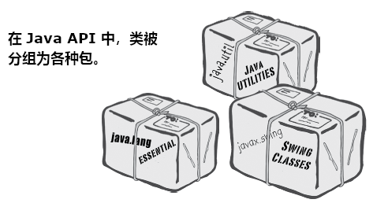

了解Java API：使用Java的库
Java语言本身，就带有多达数百个的预构建类。若掌握了如何从 Java 库，也就是常说的 Java API中找到你所需要的功能，那么就不必去重新发明轮子了（You don't have to reinvent the wheel if you know how to find what you need in the Java library, known as the Java API）。还有更好的事情等着你去做。若要编写代码，也只是要去编写对于你的应用来说，真正特有的代码。你知道那些下午5点就下班，早上10点都还没到公司的程序员吗？他们就是善于使用 Java API。Java的核心库，有着大量的类，就等着你去使用，可以像使用砖块一样，从大量预构建的代码，组装出你自己的程序。本书中用到的写好Java程序示例，就是无需从头再编写的代码，但还是必须输入到你的程序中去。而Java API则是些甚至不用输入的代码。你只需要学会怎样去使用他们就可以了。
Java标准版带有数百个预构建类（除非使用的是针对小型设备的微型版本，那么Java标准版就是你手头的版本，The Java Standard Edition，which is what you have unless you're working on the Micro Edition for small devices and believe me, you'd know）。他们就和本书中这些编写好的代码一样，只是这些内建的类，时已经编译好的。
这就是说这些内建类无需再次输入了 。直接使用他们就好。
ArrayList 是Java库中无数内建类之一。你可以在自己的代码中，如同是你自己编写的ArrayList一样使用他。
我该怎么来知道，Java API里有些什么呢？
这正是如何成为一名正式的Java程序员的关键所在。这并不是说在构建软件时尽可能的懒，而是说在有人已经完成了这门语言中大多数最重要的部分后，你可以节省那么多的时间，而你只需要花点时间去了解这些API，去完成你的软件中有趣的部分即可。
有点离题了，这个问题的答案，往短了说，就是你得花点时间来学习，在Java核心API中有些什么。往大了说，就是在完成本章学习后，就知道该怎么去获知Java API中有些什么了。
怎么才知道我要用到Java API的某个类，该如何从“要完成某个功能”过渡到“找到实现某个功能的方法”？
你已经发现了问题的本质了。在学完本书后，你将会对Java这门语言有很好的掌握。之后你的学习曲线，就是了解如何从找到问题，到通过编写尽可能少的代码，来得到问题的解决方案了。随后将讨论这个问题。
ArrayList 与 array 的不同
ArrayList 是一个对象。array也是对象，与其他对象一样，也是存活在内存堆（heap）上的。但 array仍然只是array，不会是ArrayList，只是个冒牌货的。对象是同时有 状态 和 行为 的（state and behavior）。array就没有可调用的方法。Java 中的 array 一旦初始化，就再也不能追加或移除其中的元素了。ArrayList作为头等对象，就有着移除其中元素的能力，可以动态地改变大小。ArrayList有着极大的灵活性。不可以直接将原生类型变量放入到 ArrayList中 。但将原生类型变量，封装到一个原生类型封装器类中之后，就可以将原生变量放入到 ArrayList中了（You can put a primitives in an ArrayList, as long as it's wrapped in a primitive wrapper class）。自 Java 5.0 开始，原生类型变量的封装（以及在取出原生类型变量时的解封装），就已经是自动的了。可以确定的说，在运用由原生变量构成的 ArrayList时，可能比使用array还要快，因为所有的原生变量封装与解封装，都是........话又说回来，如今谁还会用到原生类型变量呢？
对于 ArrayList，只是在操作一个普通的 ArrayList 类型的对象，只是调用普通对象上的方法，使用普通对象上的 . 运算符。而对于一个 array，就要使用 特殊的数组语法 （比如 myList[0] = foo），这些语法只能在数组上使用，其他地方都用不到。就算数组也是对象，但数组是存在于他自己的世界中，你无法调用他上面的任何方法。可以访问到的，也只是他唯一的实例变量 length。
-
普通的老式
array，在创建出来时就必须知道大小。但对于
ArrayList来说，就只需要生成一个类型为ArrayList的对象就行。因为随着有对象加入或移除，ArrayList对象的大小会增加或收缩。String[] a = new String[2]; ArrayList<String> al = new ArrayList<String> (); -
要将某个对象放入到常规数组中，就必须为其指定一个特定位置。
（而且这个位置，必须要是从
0到小于该数组长度的一个值。）myList[1] = b;在指定的索引位置超出了该数组的边界时（比如对于一个声明了大小为2的数组，在尝试将某个值赋给索引3时），运行时就会报错（
java.lang.ArrayIndexOutOfBoundsException: Index 3 out of bounds for length 3）。但对于ArrayList，就可以使用add(anInt, anObject)方法，或是只写add(anObject)，就可以为新加入的对象，分配到空间。myList.add(b); -
数组所使用的语法，在Java中的其他任何地方都不会用到。
但
ArrayList就是普通的 Java 对象，因此没有特殊的语法。myList[1]; -
自 Java 5.0 开始，
ArrayList就已经是参数化的了（parameterized）。ArrayList<String>这里的在尖括号中的
String是一个 “类型参数”（type parameter）。ArrayList<String>的意思是，“一个字符串清单”，以示与ArrayList<Dog>表示“一个 Dog 的清单”的不同。如今使用
<type>这样的语法，就可以声明并创建ArrayList变量所能保存的对象类型。在“集合”章节将会仔细审视ArrayList中的参数化类型语法。现在只需要知道，这种语法是一种强制编译器，只允许特定类型的对象，放入到ArrayList中的办法。
构造器函数（The constructor function）
构造器函数是一个与类名称同名的特殊函数，在某个对象创建时运行，返回的是其所创建的对象（非 void），故构造器函数如下面这样：
public class DotCom {
...
public DotCom (...) {
...
}
...
}
超级强大的布尔表达式（Supper Powerful Boolean Expressions）
在 DotComBust 类中的循环或 if 条件测试里，就已经用到了布尔表达式，这些布尔表达式是很简单的。在后续代码中，将用到更加强大的布尔表达式。
“与”及“或”运算符（&&、||）
假设我写一个 chooseCamera() 方法，有很多如何去选择一台相机的规则。也许要选择价钱在 $50 到 $1000 的相机，在某种情形下，要更精细地去限定价格范围。可能会这样：
- “加入价钱在 $300 到 $400, 那么就选择 X”:
if (price >= 300 && price < 400) {
camera = "X";
}
- 在有10个相机品牌可供选择时，有一些适用于品牌清单中少数几个的规则：
if (brand.equals("A") || brand.equals("B")) {
// 仅针对品牌 A 和 B 进行某些操作
}
布尔表达式可以时相当大且复杂的：
if ((zoomType.equals("optical") &&
(zoomDegree >= 3 && zoomDegree <= 8)) ||
(zoomType.equals("digital") &&
(zoomDegree >= 5 && zoomDegree <= 12))) {
// 对这种变焦，执行相应操作
}
若要真的熟知布尔表达式，就要了解这些运算符的优先级（the precedence of these operators）。除了深入了解他们的优先级，还可以使用括号，来令到代码中的复杂布尔表达式更加清晰明了。
不等于（!= 和 !）
假设有这样的一个逻辑：“10个相机型号中，除开其中的一个型号”：
if (model != 2000) {
// 针对型号不是 2000 的相机，执行一些操作
}
或者对字符串等一些对象进行比较：
if (!brand.equals("X")) {
// 对品牌不是 X 的相机进行一些操作
}
短路运算符（Short circuit operators, &&、||）
对于 && 运算符，是要其两边都是 true 时，表达式才是 true 的。所以只要虚拟机看到其左边的值为 false，就不会在计算运算符右边的表达式了。所以他叫做短路运算符。
同样对于 || 也是这样的，只要 JVM 看到他的左边是 true，会得出整个表达式就是 true，就不会再计算右边的值了。
说这个有什么用呢？比如不确定某个引用变量是否已经被赋值了某个对象，就去调用某个使用了这个空引用变量（null reference variable, 也就是，尚未将对象赋值给该引用变量）的方法时，就会得到一个 NullPointerException的错误代码。那么就可以这样写：
if (refVar != null && refVar.isValidType()) {
// 执行“已有某种类型”下的操作
}
非短路运算符（Non Short Circuit Operators, &、|）
在布尔表达式中使用 & 与 | 运算符时，他们的表现，就跟他们的同伴 && 与 || 相似，不同之处在于，这两个运算符，是要强制JVM对运算符的两边，都要进行检查。通常情况下，& 与 | 是用在不同的情形下的，比如对二进制位的操作。
使用库（Java API）
由于使用了 ArrayList，前面完成了 DotComBust 游戏。现在就是学习怎么用好 Java 库的时间了。
在 Java API 中，类是以包的形式分组的（In the Java API, classes are grouped into packages）。

图 1 - 在 Java API 中，类被分组为各种包
要使用API中的某个类，就要知道他在哪个包里头。
Java 库中的每一个类，都是属于某个包的。那个包有个名字，比如 javax.swing （一个有着一些 Swing GUI 类的包）。ArrayList则是在名为 java.util的包中，这个包有一堆的 工具（utility） 类。在第17章，将会学到更多的有关包的知识，包括如何将自己编写的类，放入自己组织的包中。
在代码中使用API的类，是很简单的。只需将那个类当成自己编写的，自己编译的，就在那里等着使用就可以了。有一个不同点在于，在代码中的一些地方，需要用库类的 完整 名字来表示，完整名字就是，包的名字 + 类的名字。
就算对这个不了解，实际上很早就用到了来自某个包的类。System（System.out.println），String，以及 Math （Math.random()），这些类，都是属于 java.lang 包的。
对于在代码中要用到的类，就必须知道他的完整名字。
ArrayList 并不是 ArrayList 的完整名字，就如同 Kathy 不是一个全名一样（除非像是 Madonna 或 Cher 这样的人）。ArrayList的全名实际上是：
java.util.ArrayList
其中 java.util是包的名字，ArrayList是类的名字。
必须告诉 Java，你要使用哪个 ArrayList，有两种做法：
-
导入（
IMPORT）在源代码文件的顶部，放上一个导入语句：
import java.util.ArrayList;
public class MyClass {...}
-
手动输入（TYPE）
在代码中使用到
ArrayList的各处，输入完整的名字。在声明或初始化某个
ArrayList变量时：
java.util.ArrayList<Dog> list = new java.util.ArrayList<Dog> ();
在使用 ArrayList 变量作为参数类型时：
public void go (java.util.ArrayList<Dog> list) {...}
在将 ArrayList 作为返回值的类型时：
public java.util.ArrayList<Dog> foo () {...}
为什么这些库类，都必须有一个全名呢？难道这就是Java包的目的吗？
包的重要性，有三个方面。首先，包有助于某个项目或库的良好组织。相比于有着可怕的一大堆类文件，使用包就可以将众多的类文件，以不同目的（比如GUI的、数据结构的，或者数据库方面的等等），组织成包。
其次，包的使用，可以带来名称上的范围限制，从而有助于防止冲突的发生。比如你和公司的其他12名程序员，都以同样的名字编写类文件时。再比如你自己编写了一个名为 Set 的类文件，其他人（包括 Java 的 API）也有同名的类文件，那么就要需要一种告诉 JVM，到底要使用那个 Set 类的机制。
第三，包在一定程度上提供了安全性。因为可以对所编写的代码做限制，从而只有同一包里的其他类，才能访问到这个包。这一点在第17章将会讲到。
Java语言有一个命名约定，通常可以阻止冲突的发生。
包名字中 x 表示什么意思
在第一版和第二版的 Java 中（1.02 和 1.1），与 Java 语言一起发布的类（也就是标准库），都是以 java 打头的。这些都是 java.lang 的，也就是不必加以导入的。同时还有 java.net、java.io、java.util（尽管那个时候还没有 ArrayList），以及一些其他的类库，包括保存GUI相关类的 java.awt包。
逐渐的，标准库中未包含的其他包逐一出现。这些类也就是我们所说的 扩展（extensions），这些扩展又有两种： 标准（standard） 与 非标准（not standard） 扩展。标准扩展是那些 Sun 公司认为的官方扩展，他们与实验性扩展、早期版本或者说 beta 版等，或许永远也不会投入使用的包，有所不同。
按照惯例，标准扩展都是在原本作为开头的 java 之后，追加了 x 打头的。而所有标准扩展的开创者，就是 Swing 库。这个库包含了若干个包，这些包都是以 javax.swing 开头的。
而某些标准扩展，就有机会得到提升，从而成为头等的、Java自带的、标准的即开即用的库文件包。从 Java 1.2 开始，Swing就享受到了这样的待遇。
“真不赖” ，所有人都这样想，“往后所有装了Java的人就都有了 Swing 类文件了，就再也不需要给我们的终端用户去安装这个类了”。
但麻烦随之而来，在这些包得到提升之后，理所当然他们就不得不以 java 打头，而再也不是 javax打头了。所有人都知道标准库都不带有 x，而只有扩展才有。那么，就在 1.2 版本终结的时候，Sun公司就修改了这些包的名字，把其中的 x 删除掉了（以及其他的一些改变）。这个时候很多即将印刷以及在书店售卖的Java书，将 Swing 代码以新名字加以介绍。命名约定得到遵守。在Java世界里万事大吉。
但对于超过 20k 的开发者来说，他们意识到这样简单的名字改变，却带来了灾难！他们的所有用到 Swing 的代码，都不得不进行修改！多么可怕！想想那些以 javax 开头的代码...
在最后时刻，伴随着希望变得渺茫，他们绝望了，这些开发者说服了 Sun 公司，去“打破惯例，拯救他们的代码”。剩下的事情就成了历史。因此当你看到在库中以 javax 打头的某个包，就应该知道这个包是以某个扩展诞生，随后获得了提升（进入到标准库中）。
知识点
ArrayList是 Java API 中的一个类- 使用
add()方法，往ArrayList中放入某些东西 - 要从
ArrayList中移除某物，使用remove()方法 - 使用
indexOf()方法，来确定某对象是否在ArrayList中 - 要确定某个
ArrayList是否为空，使用isEmpty()方法 - 使用
size()方法，来获取某个ArrayList的大小（元素个数） - 对于常规的老式数组，要获取其长度（length, 元素个数），使用的是其变量
length ArrayList引用变量的大小，可以根据需要动态的改变。在添加了对象后，就会变大；在移除对象后，相应地会变小- 在声明
ArrayList引用变量的数组类型时，使用的是 类型参数（type parameter），也就是在尖括号中的一个类型名称。比如，ArrayList<Button>意思是这个ArrayList将只能保存类型为Button的对象（或者Button的子类，后续章节会学习相关的内容）。 - 尽管
ArrayList保存的是对象而非原生变量，但编译器会自动地对原生变量进行封装（ wrap, 并在从ArrayList中取出原生变量时，进行解封装， unwrap），使其成为一个对象，从而放入到ArrayList中的，就是封装后的对象，而不在时原来的原生变量了。 - 类是以包的形式进行组织的。
- 类有着由其所属包的名字，和类本身名字，组合而成的全名。类
ArrayList实际上是java.util.ArrayList - 要使用除
java.lang之外的其他包中的某个类，就必须告诉 Java 那个类的全名 - 要么在源代码文件的顶部使用一条导入语句，要么就在代码中所有要用到类的地方，输入这个类的全名
关于 import 语句
import 与 C 语言中的 include 不同。因此 import 的使用不会令到类变得更大，同时也不会将所导入的类或包，编译到自己的代码中去。import 的使用，是从大量的敲代码中拯救你的。无需担心过多地使用 import 会导致代码臃肿或变慢。import就只是一种你让Java知道某个类的全名的方式而已。
为什么不需要导入 String 或 System 类呢？
那是因为 java.lang 是特殊的 预导入（pre-imported） 包。因为在 java.lang中的那些类是相当基础的类，因此就不必使用他们的全名。这样的也就只有两个： java.lang.String 和 java.lang.System，Java 很清楚可以在哪里找到他们。
必须把自己编写的类也放入Java包里吗？怎样才能放入包里，可以这样做吗？
在生产中，是应该把自己编写的类文件，放入到包中的。在第17章会讲到这个问题。
牢牢记住
Roses are red,
apples are ripe,
if you don't import
you'll just have to type
在没有使用导入语句时，除了那些 java.lang包中的类之外，就 必须告诉Java所用到的每个类的全名。在源代码文件顶部，使用一个类或包的import导入语句，是一种简便方法。否则，就必须在使用到那个类或包的所有地方，都敲入他的全名！
使用 API 的方法
两个问题：
- 在库中有哪些类文件？
- 在找到某个类之后，怎样才能知道他是用来做什么的？
有两个途径：
-
翻书
一本 Java 参考书，就是去发现Java库里有些什么的最好办法。
-
查看线上的 HTML API 文档
Java 本身就有着一套良好的线上文档，名字就叫 Java API。这套文档又是另外一套更大的名为 Java 5 标准版文档的一部分，这些线上文档还必须得去单独下载；这些文档不是和 Java 程序一起提供的。
这些API文档，在要进一步了解某个类及其方法时，最好的参考资料。比如在查阅参考书时，在
java.util包中发现一个名为Calendar的类时，参考书只能告诉你这个类的有限的、仅能让你明白这个类正是你要用到的一点点内容，在你需要了解更多的有关这个类的信息时，就可以在线上文档里找到。